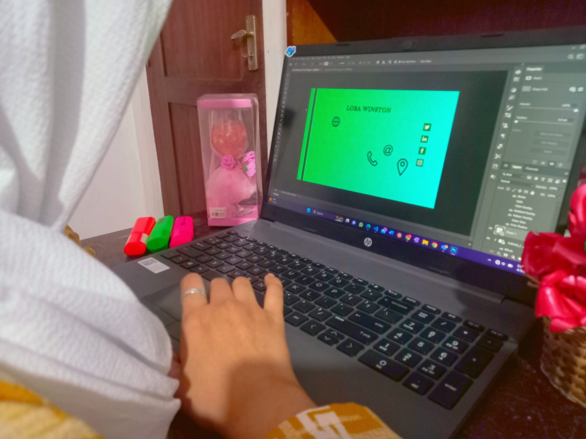

Graphic designing is a wonderful hobby that allows you to express your creativity, imagination, and artistic skills. Whether you enjoy designing logos, posters, website layouts, or illustrations, graphic designing provides a range of opportunities for you to
explore and experiment with different styles, colors, and fonts.
As a graphic designer, you have the power to communicate messages visually, using your designs to convey ideas and emotions in a way that words alone cannot.

You can use your designs to create a brand identity for a company, communicate a social cause, or evoke a specific mood or feeling.
To excel in graphic designing, you need to have a keen eye for detail,
an understanding of color theory, typography, and design principles, as well as proficiency in design software such as Adobe Photoshop, Illustrator, or InDesign. While it can be challenging at times, learning and improving your skills can be incredibly rewarding and satisfying.
One of the best things about graphic designing is that it allows you to collaborate with other creatives and learn from their experiences. You can join online communities, attend design workshops, or even work on design
projects with your friends to enhance your skills and gain new insights.
So keep exploring your passion for graphic designing, experiment with different styles and techniques, and don't be afraid to take risks and try new things. With hard work, dedication, and creativity, you can develop your skills and become a successful graphic designer!